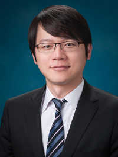

電子郵件：sean.tung@thlk.com.tw
電話：+886-2-8789-3138
童兆祥 主持律師
童兆祥律師於訴訟領域具有豐富實務經驗，不僅代表客戶處理傳統民事、刑事、行政訴訟以及家事事件，且代表客戶處理商業會計法、公司法、證券交易法（例如：財報不實、內線交易、操縱股價）、證券投資信託及顧問法等商務金融案件。此外，在不動產領域，童兆祥律師對於土地法、都市更新條例等不動產相關法令有深入研究，曾代表國內知名不動產仲介公司處理多起不動產買賣、租賃及仲介紛爭，亦經常處理不動產合建、信託相關案件；童兆祥律師並長年擔任強制執行法之專任講師，處理諸多不動產法拍案件，對於法拍程序、強制執行實務相當熟稔；童兆祥律師同時參與臺北市多件知名都市更新案件（例如：文林苑、永春社區、正義大樓都市更新案），協助客戶處理都市更新程序衍生之諸多法律爭議。
在加入海禾通商法律事務所之前，童兆祥律師曾為萬國法律事務所訴訟部門律師及協合國際法律事務所顧問，主要負責民事、刑事、行政訴訟，公司法、證券交易法、證券投資信託及顧問法相關訴訟、強制執行程序以及都市更新相關爭議案件。童兆祥律師畢業於國立台灣大學法律系、國立台灣大學法律學研究所民商法學組，現為台北、桃園、新竹、台中律師公會會員、台灣金融研訓院不動產專業課程講師。
- 學歷：台灣大學法學士、台灣大學法學碩士
- 資格：中華民國律師、中華民國仲裁協會仲裁人
- 專業領域：民事、刑事、行政訴訟，家事事件、公司法、證券交易法、證券投資信託及顧問法相關訴訟、強制執行程序、都市更新程序
- 使用語言：普通話、英語、台語